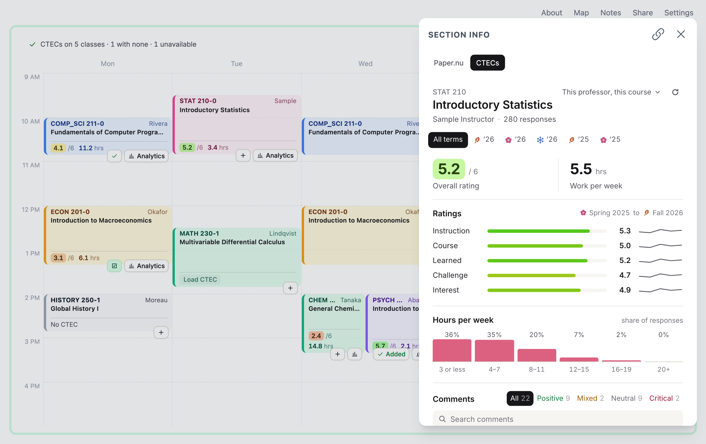

pencil.nu
CTECs, prereqs and seats
on your schedule
Free
Chrome and Firefox

553
prereqs
corrected

 Chrome and FirefoxChrome and FirefoxChrome and Firefox
Chrome and FirefoxChrome and FirefoxChrome and Firefox